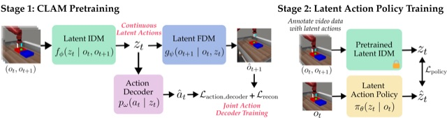
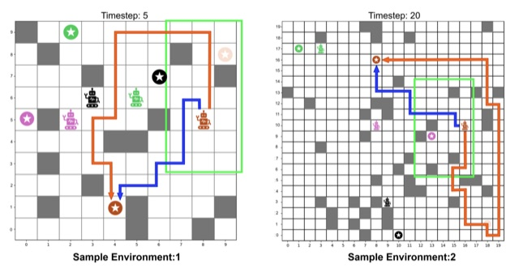

Hi! I'm an incoming PhD student in Computer Science at UT Austin. My research goal is to build autonomous agents that learn and adapt through real-world interaction. To this end, I work on robotics and reinforcement learning.
Previously, I spent a year at the University of Washington working with Abhishek Gupta and Jesse Zhang. Before that, I graduated from USC working with Erdem Bıyık, Jesse Zhang, and Anthony Liang.

